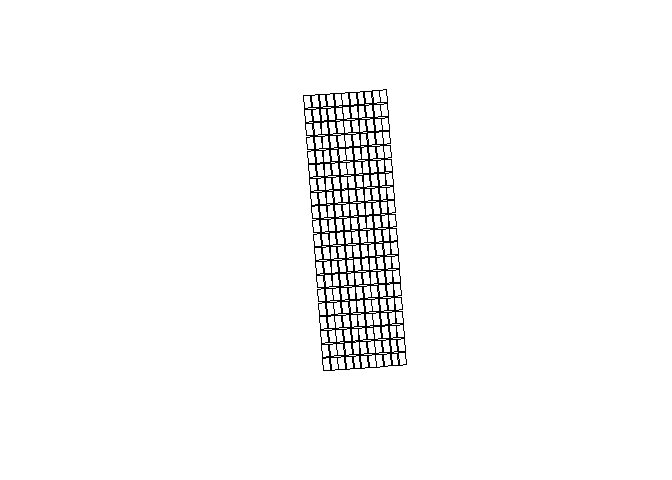

plotPlotR referring to plot plotter is a package containing set of functions to create plot layouts on field trial as segments or boundaries for the purposes of extracting value from each plot or adding new data against each plot.
The functions are based on the implementation of “sf” package in R and it provides users with a set of tools that are simple for R users to create or manipulate plot boundaries. Users who may not be familiar with spatial data or want functions that can be used easily, repeatedly and in a automated way can use this package.
Agricultural research and farm management are increasingly becoming digital. Equipment used in farm operations and data collection are often connected to the internet, satellites and generates rich meta-data. These meta-data has the potential to become key research support tools that generates new opportunity.
plotPlotR takes GPS data from the connected devices or manually collected coordinates from rasters or other sources to develop tools that supports agricultural research and farm management. Since it is spatial data we are talking about, the applications of this package extend beyond agriculture to preserving biodiverstity, land management, soil conservation etc.
Installation
You can install the development version of plotPlotR from GitHub with:
# install.packages("devtools")
devtools::install_github("AgDataNomad/plotPlotR")Example
This is a basic example which shows you how to create plot boundaries:
library(plotPlotR)
## A simple function to create plot layout with corner points from a csv file
cornersData # dataframe with 4 XY points corresponding to four corners of an experiment
#> X Y id
#> 1 148.6870 -34.47064 1
#> 2 148.6873 -34.47062 4
#> 3 148.6869 -34.46992 2
#> 4 148.6872 -34.46990 3
dat <- read_input_dat(cornersData, 4326, 28355) # Reading data and converting to unit M CRS
dat_plots <- corners_to_plots(dat, 80, 24.2, 11, 20)
dat_plots <- addRunRange(dat_plots, "BL", n_runs = 11, n_ranges = 20)
plot(dat_plots)
Getting started
Reading data
The function read_input_dat() is used to bring your coordinates data into the plotPlotR environment. read_input_dat allows users to input a csv file path or a dataframe loaded in the R environment or any common shape file formats.
plotPlotR requires all shapefiles to have a Coordinate Reference System (CRS) and more importantly it requires coordinates in unit meters to compute different functions. Coordinate Reference System is a coordinates based system to locate geographical entities and is the core principles of GIS workflows. Most common CRS is WGS84 or EPSG 4326, which uses longitudes and latitudes to locate geographical entities. This CRS is what gets used in applications such as navigation systems, google maps, drone navigation etc. Orthomosaics generated using a stitching software often has CRS 4326.
When reading data from a CSV file or from a dataframe, users need to supply the X and Y values using XY argument and the CRS using the input_CRS arg. input_CRS argument takes any default CRS formats, just entering the EPSG code as a number works, for example input_CRS = 4326. XY argument is not required if and when the csv file or the dataframe has XY as the first two columns.
Here is an example of reading data using the cornersData dataset included in the package. read_input_dat function is used without declaring to_CRS_M argument. NOTE: When to_CRS_M is not supplied, plotPlotR automatically assigns a WGS 84 / Pseudo-Mercator CRS.
dat <- read_input_dat(input_dat = cornersData,
input_CRS = 4326)
dat
#> Simple feature collection with 4 features and 1 field
#> Geometry type: POINT
#> Dimension: XY
#> Bounding box: xmin: 16551752.3556914 ymin: -4092173.30932014 xmax: 16551789.4505747 ymax: -4092074.50353949
#> Projected CRS: WGS 84 / Pseudo-Mercator
#> id geometry
#> 1 1 POINT (16551761.36137088015...
#> 2 4 POINT (16551789.45057468861...
#> 3 2 POINT (16551752.35569142177...
#> 4 3 POINT (16551780.27652684040...Here is an example of reading data with a to_CRS_M agrument.
dat <- read_input_dat(input_dat = cornersData,
input_CRS = 4326,
to_CRS_M = 28355)
dat
#> Simple feature collection with 4 features and 1 field
#> Geometry type: POINT
#> Dimension: XY
#> Bounding box: xmin: 654928.548113784 ymin: 6184367.6941717 xmax: 654957.872873335 ymax: 6184448.58739261
#> Projected CRS: GDA94 / MGA zone 55
#> id geometry
#> 1 1 POINT (654934.6622248028870...
#> 2 4 POINT (654957.8728733353782...
#> 3 2 POINT (654928.5481137837050...
#> 4 3 POINT (654951.6220567182172...An example of reading data from a dataframe
dat <- cornersData
class(dat) ##dataframe
#> [1] "data.frame"
df_dat <- read_input_dat(input_dat = dat, input_CRS = 4326)Here is an example of reading input data when the dataframe or the CSV file doesn’t contain X and Y as the first two columns. read_input_dat function will convert the XY columns to geometry and preserves all other columns.
dat <- cornersData
#rearranging and renaming columns and adding a new column to demonstrate read_input_dat function
dat <- dat[,c(3,1,2)]
colnames(dat) <- c("A","B","C")
dat$comment <- "some_gps_data"
df_dat <- read_input_dat(input_dat = dat,
input_CRS = 4326,
XY = c("B", "C"), # columns names of X and Y coordinates
to_CRS_M = 28355)
df_dat
#> Simple feature collection with 4 features and 2 fields
#> Geometry type: POINT
#> Dimension: XY
#> Bounding box: xmin: 654928.548113784 ymin: 6184367.6941717 xmax: 654957.872873335 ymax: 6184448.58739261
#> Projected CRS: GDA94 / MGA zone 55
#> A comment geometry
#> 1 1 some_gps_data POINT (654934.6622248028870...
#> 2 4 some_gps_data POINT (654957.8728733353782...
#> 3 2 some_gps_data POINT (654928.5481137837050...
#> 4 3 some_gps_data POINT (654951.6220567182172...Writing data
Writing outputs of plotPlotR is done through calling write_output_obj() function. This function takes two arguments; output_dat and file_name. File name is the file path with the desired extention type. For example geoJSON, kml etc.
dat <- read_input_dat(input_dat = cornersData,
input_CRS = 4326)
#write_output_obj(dat, "path_to_folder/file_name.geoJSON")Creating plot layout
Creating plot layout is the core function of the plotPlotR package. Creating plots can be done in one of two ways depending on what information is available.
- From 4 coordinates or sets of 4 coordinates, center of which is the center of the experiment.
corners_to_plotsfunction is used to generate plot layouts from the corner points. The corner points can be generated using different ways, if you have a raster you can usecollect_cornersfunction to collect corners. Users can use google earth, QGIS, Ground Control Points data to get 4 corner points. - From trip points generated from tractors/seeders etc using the
make_plotsfunction. Modern tractors uses GPS or similar systems to drive on a paddock to sow seeds etc. These trip points, one for each plot can be used to create a field layout.